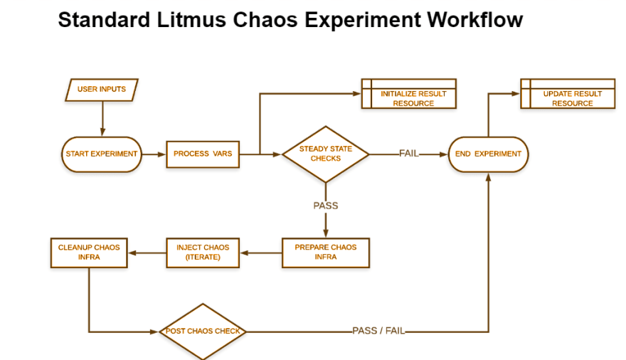

Litmus SDK
The Litmus SDK provides a simple way to bootstrap your experiment and helps create the aforementioned artifacts in the appropriate directory (i.e., as per the chaos-category) based on an attributes file provided as input by the chart-developer. The scaffolded files consist of placeholders which can then be filled as desired.
It generates the custom chaos experiments with some default Pre & Post Chaos Checks (AUT & Auxiliary Applications status checks). It can use the existing chaoslib (present inside /chaoslib directory), if available else It will create a new chaoslib inside the corresponding directory.
Life Cycle of a Chaos Experiment¶
Each Chaos Experiment is divided into six main sections:

Pre-requisites¶
Steps to Generate Experiment via Litmus SDK¶
## for litmus-go
$ git clone https://github.com/litmuschaos/litmus-go.git
$ cd litmus-go/contribute/developer-guide
As an example, let us consider an experiment to kill one of the replicas of an Nginx deployment. The attributes.yaml can be constructed like this:
$ cat attributes.yaml
---
name: "sample-pod-delete"
version: "0.1.0"
category: "sample-category"
repository: "https://github.com/litmuschaos/litmus-go/tree/master/sample-category/pod-delete"
community: "https://kubernetes.slack.com/messages/CNXNB0ZTN"
description: "kills nginx pods in a random manner"
keywords:
- "pods"
- "kubernetes"
- "sample-category"
- "nginx"
scope: "Namespaced"
auxiliaryappcheck: false
permissions:
- apigroups:
- ""
- "batch"
- "litmuschaos.io"
resources:
- "jobs"
- "pods"
- "chaosengines"
- "chaosexperiments"
- "chaosresults"
verbs:
- "create"
- "list"
- "get"
- "update"
- "patch"
- "delete"
maturity: "alpha"
maintainers:
- name: "ispeakc0de"
email: "shubham.chaudhary@harness.io"
provider:
name: "Harness"
minkubernetesversion: "1.12.0"
references:
- name: Documentation
url: "https://docs.litmuschaos.io/docs/getstarted/"
## litmus-go
$ ./litmus-sdk generate <generate-type> -f=attributes.yaml
Note: Replace the <generate-type> placeholder with the appropriate value based on the usecase:
- experiment: Chaos experiment artifacts belonging to a an existing OR new chart
- Provide the type of chaoslib in the -t flag. It supports the following values
- exec: It creates the exec based chaoslib(default type)
- helper: It creates the helper based chaoslib
- chart: Just the chaos-chart metadata, i.e., chartserviceversion yaml
- Provide the type of chart in the -t flag. It supports the following values
- category: It creates the chart metadata for the category i.e chartserviceversion, package manifests
- experiment: It creates the chart for the experiment i.e chartserviceversion, engine, rbac, experiment manifests
- all: it creates both category and experiment charts (default type)
- provide the path of the attribute.yaml manifest in the -f flag.
Verify the Generated Files¶
$ cd /experiments
$ ls -ltr
total 8
drwxr-xr-x 3 shubham shubham 4096 May 15 12:02 generic/
drwxr-xr-x 3 shubham shubham 4096 May 15 13:26 sample-category/
$ ls -ltr sample-category/
total 12
-rw-r--r-- 1 shubham shubham 41 May 15 13:26 sample-category.package.yaml
-rw-r--r-- 1 shubham shubham 734 May 15 13:26 sample-category.chartserviceversion.yaml
drwxr-xr-x 2 shubham shubham 4096 May 15 13:26 sample-pod-delete/
$ ls -ltr sample-category/sample-pod-delete
total 28
-rw-r--r-- 1 shubham shubham 791 May 15 13:26 rbac.yaml
-rw-r--r-- 1 shubham shubham 734 May 15 13:26 sample-pod-delete.chartserviceversion.yaml
-rw-r--r-- 1 shubham shubham 792 May 15 13:26 experiment.yaml
-rw-r--r-- 1 shubham shubham 813 May 15 13:26 engine.yaml
## this file will be created in case of litmus-go
--rw-r--r-- 1 shubham shubham 4096 May 15 13:26 test
-rw-r--r-- 1 shubham shubham 4533 May 15 13:26 sample-pod-delete.go
## this file will be created in case of litmus-ansible
-rw-r--r-- 1 shubham shubham 1777 May 15 13:26 pod-delete-k8s-job.yml
-rw-r--r-- 1 shubham shubham 4533 May 15 13:26 pod-delete-ansible-logic.yml
$ ls -ltr sample-category/sample-pod-delete/test
total 4
-rw-r--r-- 1 shubham shubham 1039 May 15 13:26 test.yaml
- variables
- entry & exit criteria checks for the experiment
- helper utils in either pkg or new base chaos libraries
spec.definition.env with their default values.chaoslib/litmus/sample-pod-delete/lib/pod-delete.go chaoslib to achieve the desired effect or reuse the existing chaoslib.Steps to Include the Chaos Charts/Experiments into the ChartHub¶
litmus-go/litmus-go repo with the modified experiment files i.e, pod-memory-hoglitmuschaos/chaos-charts repo with the modified experiment CR, experiment chartserviceversion, chaos chart (category-level) chartserviceversion & package (if applicable) YAMLs i.e, kubelet service kill